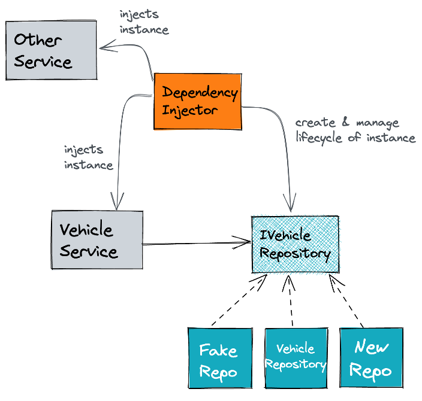
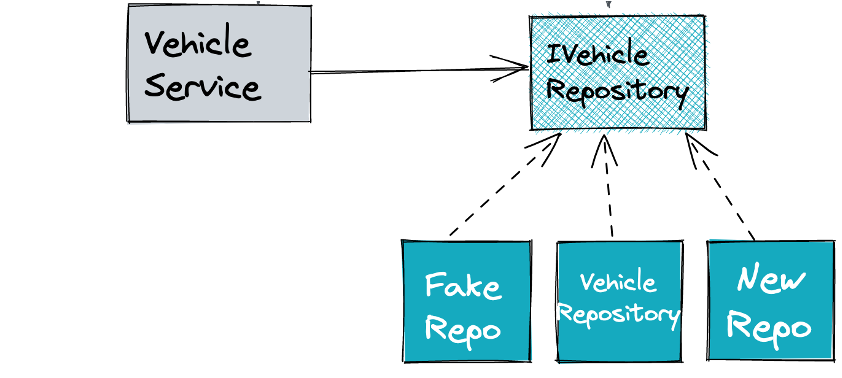

Implementing the Ports & Adapters Pattern⚓︎
Dependency Injection⚓︎
The Dependency Injection Pattern is characterized as follows:
A central component, the dependency injector, manages the lifecycle of class instances and injects these instances into several consumers.

Relevant types of dependency injection by example with java and spring:
import org.springframework.beans.factory.annotation.Autowired;
public class Consumer {
@Autowired //field injection
private DependencyOne one;
private DependencyTwo two;
@Autowired // contructor injection
public VehicleService(DependencyTwo two) {
this.two = two;
}
@Autowired //method injection
public void doSomething(DependencyThree three) {
three.doSomething();
}
}
In short, the goal of dependency injection is to reduce the coupling between a consumer and provider class by the externalization of object creation and management of the object's lifecycle. So consumers can focus on the usage of this dependency. In combination with interfaces, the consumer will be decoupled from a provider-specific implementation.
Futher informations about dependency injection
(Input) Adapter Ring⚓︎
Coding Task 2.1
Create a HTTP Input Adapter and Connect It to the DomainThe class-stereotype Controller is the place to
- implement HTTP-based inbound into our application,
- wiring incoming use cases to execute domain functionality and,
- transform domain-related exceptions to HTTP status codes.
WP0ZZZ99ZTS392155
Java
public Vehicle readVehicle(String vin) {...}
Kotlin
fun readVehicle(vin: String): Vehicle {...}
C#
public VehicleRootEntity ReadVehicle(string vin) {...}
Coding Task 2.2
Call the Domain- Create the incoming use case VehicleQuery with the method
- Replace the hard-coded Vehicle within VehicleController with the usage of VehicleQuery
- The dependency between VehicleController and VehicleQuery should be resolved via constructor injection
- Implement the incoming usecase VehicleQuery through VehicleService
Java
Vehicle findByVin(Vin vin);
Kotlin
fun findByVin(vin: Vin): Vehicle
C#
VehicleRootEntity FindByVin(string vin) {...}
Verify Lab 2
RUN InputAdapter_Task_2_1_2_2RUN ArchitectureTest_Task_2_1_2_2
Dependency Inversion Principle⚓︎
The dependency inversion principle says:
Abstractions should not depend on details. Details should depend on abstractions.
The VehicleService is a concrete implementation. This means it is a detail. Following the dependency inversion principle, the VehicleService should depend on an abstraction like an interface. This interface will be implemented by the provider of a functionality. As a result, there is no direct dependency on a specific implementation. The dependency is inverted!

(Output) Adapter Ring⚓︎
Coding Task 2.3
Introduce a Outgoing Use Case and Create a Database Adapter The class-stereotype Repository is the place to- wire a JdbcRepository or JpaRepository,
- connect to a database with plain jdbc,
- define and execute sql statements as well as
- handle sql errors.
- Create the outgoing usecase VehicleDbQuery with the method
- Create the repository VehicleRepository and place it in the designated package
- The repository should implement VehicleDbQuery and should return a hard-coded Vehicle instance
- Replace the hard-coded Vehicle within VehicleService with the usage of VehicleDbQuery
- The dependency between VehicleService and VehicleDbQuery should be resolved via constructor injection
Java
Vehicle findVehicleByVin(Vin vin);
Kotlin
fun findVehicleByVin(vin: Vin): Vehicle
C#
VehicleRootEntity FindVehicleByVin(Vin vin) {...}
Verify 2.3
RUN OutputAdapter_Task_2_3RUN ArchitectureTest_Task_2_3
Optional Questions
For dealing with persistence aspects spring-data-jpa or spring-data-jdbc uses annotations like @Entity, @Table, @Id, @Column, etc. Often this concepts need also an empty constructor as well as setter and getters for all properties.@Table("vehicle") //jdbc
@Entity //jpa
public class Vehicle {
@Column("vin")
@Id
private Vin vin;
//...
public Vehicle() {
}
public Vehicle(Vin vin) {
//...
}
//getter and setter
}
-
Regarding the above code example answer following questions:
- Is the domain object Vehicle decoupled from infrastructure aspects?
- Is it possible to ensure a valid creation of the domain object like implemented in Lab 1?
- Is there fully control that the domain object state stays valid over the lifetime of the object?
- Is a value object a good structure for a relational database? What are benefits of a value object like the Vin?
- How would you describe the relationship between dependency inversion and dependency injection?
-
How would you describe the single responsibility principles for the following classes? Make two or three bullet
points.
- VehicleController,
- VehicleService,
- VehicleRepository and
- Vehicle
Example
The responsibility of VehicleController with the stereoytpe Controller is:- ...
- ...
- ...